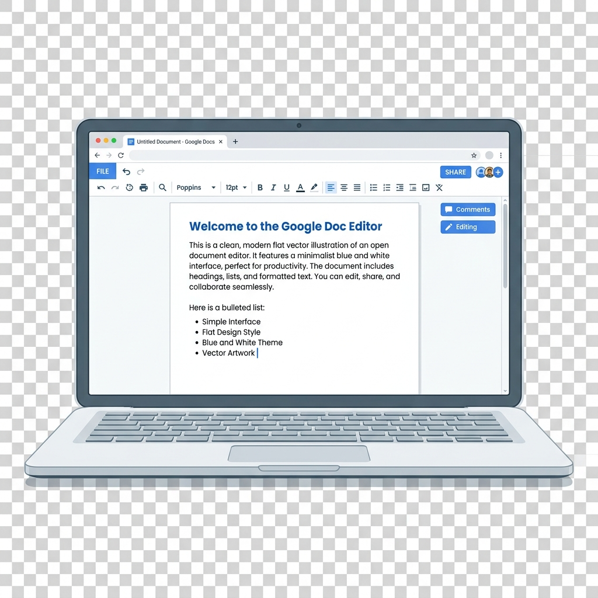
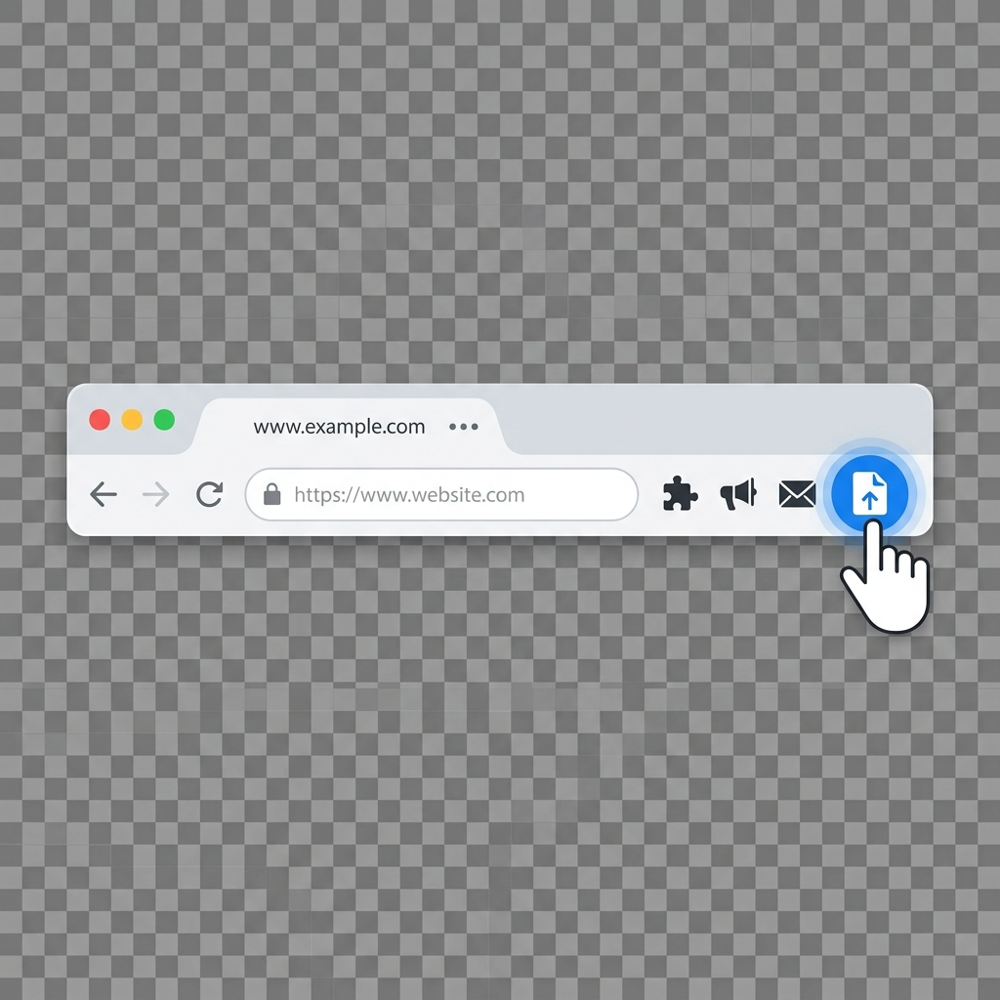
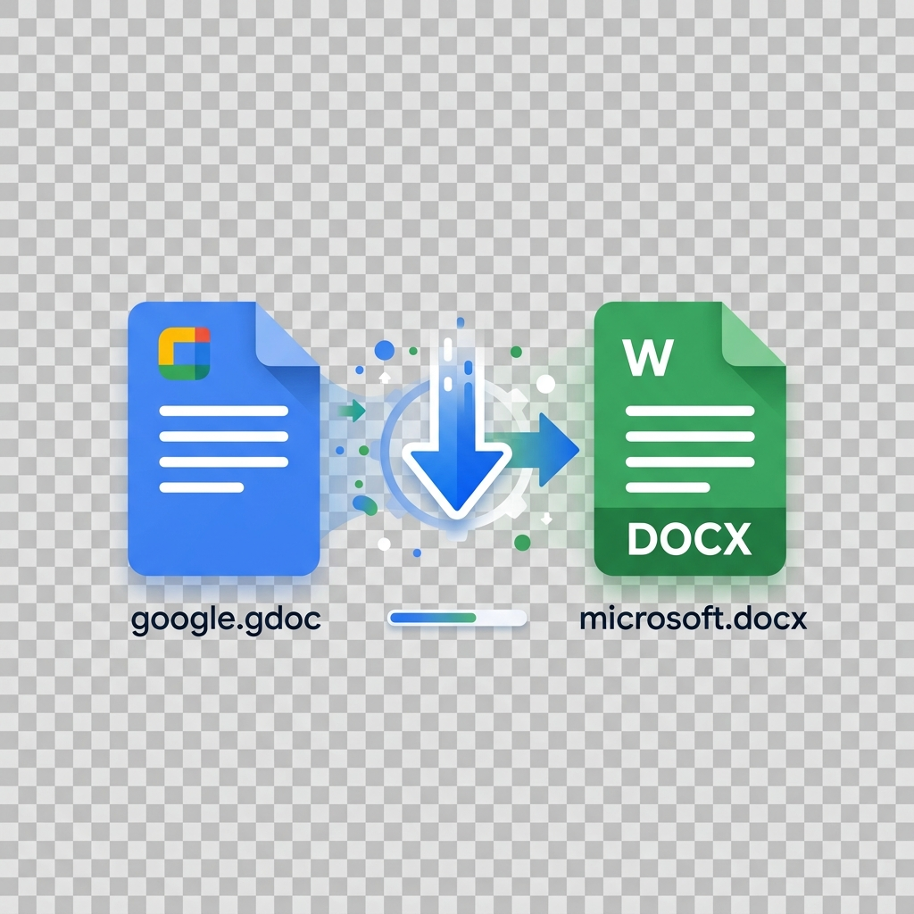

How it works: 3 Simple Steps
Step 1

Open Google Docs
Navigate to any Google Docs document that you want to export. It works perfectly even on document links shared in view-only or restricted modes!
Step 2

Click DocPort
Click on the DocPort extension icon pinned on your browser toolbar. The extension popup will immediately recognize and display your document.
Step 3

Preview & Export
Click Preview to inspect layout, structure, and images, then click Export .docx to download the Word document instantly.